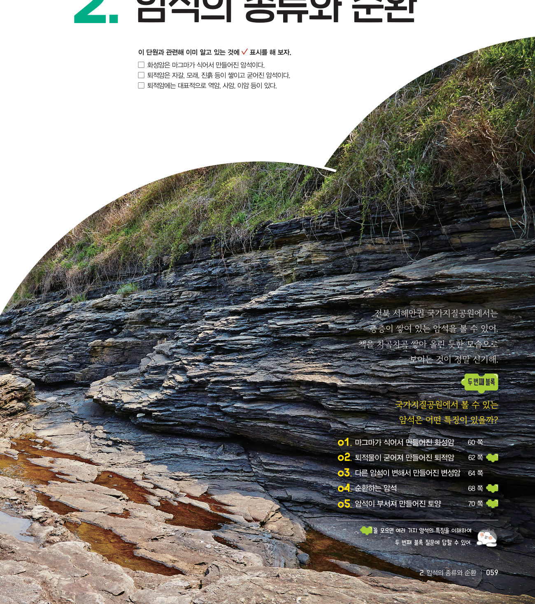
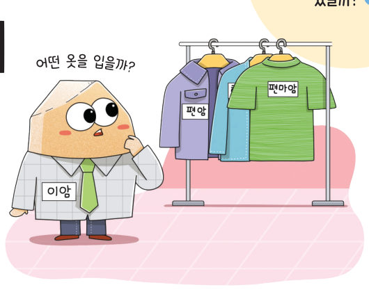
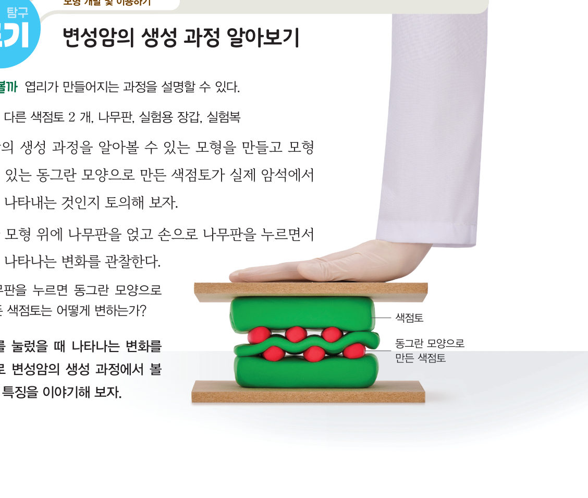
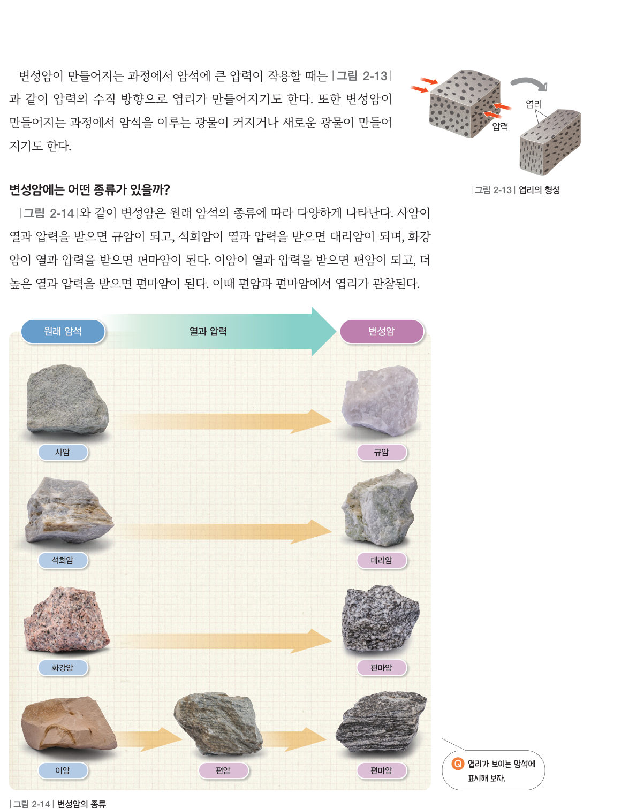
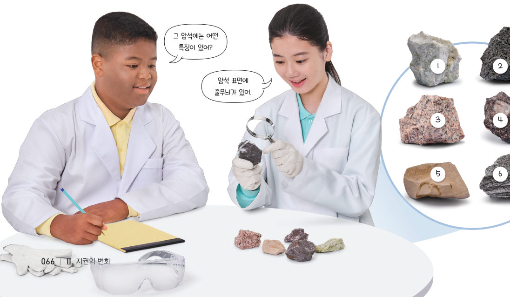

“어떤 옷을 입을까?” 암석의 성질이 어떻게 변할 수 있을까? 가상 색점토를 눌러 엽리를 만들고, 열과 압력을 높여 사암·석회암·화강암·이암을 변성암으로 바꾼 뒤, 여섯 가지 암석을 관찰해 분류해 보자.
암석이 지하 깊은 곳에서 높은 열과 압력을 받으면 성질이 변하여 새로운 암석이 된다. 이렇게 암석을 변하게 하는 작용을 받아 만들어진 새로운 암석을 변성암이라고 한다. 변성암에서는 광물의 배열이 바뀌면서 줄무늬가 생기기도 하는데, 이를 엽리라고 한다.

변성암이 만들어지는 과정에서 암석에 큰 압력이 작용할 때는 그림 2-13과 같이 압력의 수직 방향으로 엽리가 만들어지기도 한다. 또한 변성암이 만들어지는 과정에서 암석을 이루는 광물이 커지거나 새로운 광물이 만들어지기도 한다.
그림 2-14와 같이 변성암은 원래 암석의 종류에 따라 다양하게 나타난다. 사암이 열과 압력을 받으면 규암이 되고, 석회암이 열과 압력을 받으면 대리암이 되며, 화강암이 열과 압력을 받으면 편마암이 된다. 이암이 열과 압력을 받으면 편암이 되고, 더 높은 열과 압력을 받으면 편마암이 된다. 이때 편암과 편마암에서 엽리가 관찰된다.


학교 정원, 진입로 등에서 안전하게 관찰할 수 있는 암석을 찾아 광물이 뚜렷하게 구분되는지 확인하고, 생성 과정에 따라 정리해 보자. ⚠️ 경사가 급하거나 낙석 위험이 있는 곳은 가지 않는다.
| ② 암석에 큰 압력이 작용할 때 압력의 수직 방향으로 층리가 만들어진다. | |
| ③ 높은 열과 압력을 받으면 광물이 커지거나 새로운 광물이 만들어지기도 한다. |
| ④ 사암 → | |
| ⑤ 화강암 → | |
| ⑥ 석회암 → |
| ⑧ 화성암 | |
| ⑨ 퇴적암 | |
| ⑩ 변성암 |
| 평가 기준 | 스스로 평가 |
|---|---|
| 과정·기능 암석의 특징을 관찰하여 화성암, 퇴적암, 변성암으로 옳게 분류했는가? | |
| 가치·태도 모형을 이용하여 엽리가 만들어지는 과정을 이해하고, 활동에 적극적으로 참여했는가? |